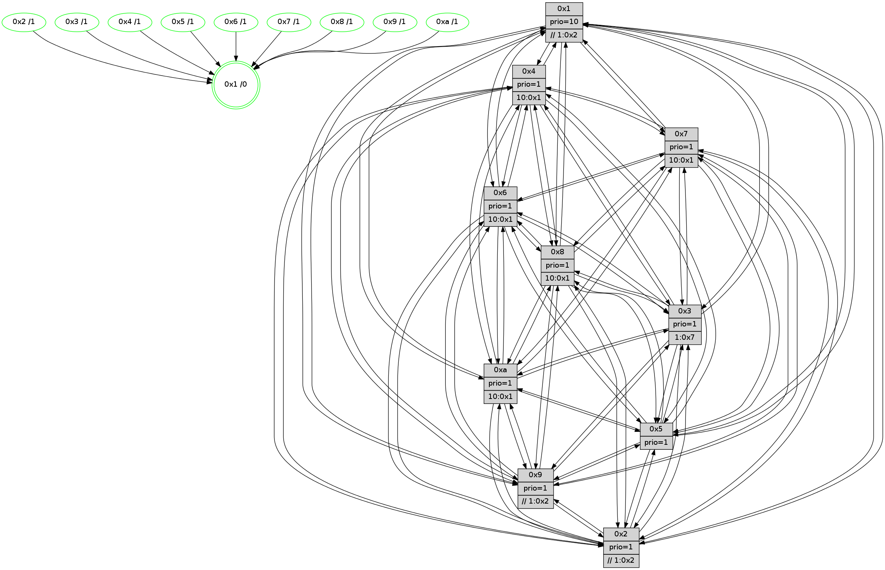

>> << IDX [start] -100 -25 -5 +0 +5 +25 +100 [870.525194168]
 Previous packets
----------------------------------------------------------------------
865.008277 beacon01(faad) #0 coord=01,02,03,04,05,06,07,0a,09,08 cycle=688.0ms assoc
-- color-indic=1 64 dd 6c
865.018259 beacon02(faad) #0 coord=01,02,03,04,05,06,07,0a,09,08 cycle=688.0ms assoc 64 4e 5d
865.028261 beacon03(faad) #0 coord=01,02,03,04,05,06,07,0a,09,08 cycle=688.0ms assoc 64 34 10
865.038260 beacon04(faad) #0 coord=01,02,03,04,05,06,07,0a,09,08 cycle=688.0ms assoc 64 43 fa
865.048261 beacon05(faad) #0 coord=01,02,03,04,05,06,07,0a,09,08 cycle=688.0ms assoc 64 39 b7
865.058261 beacon06(faad) #0 coord=01,02,03,04,05,06,07,0a,09,08 cycle=688.0ms assoc 64 b7 60
865.068261 beacon07(faad) #0 coord=01,02,03,04,05,06,07,0a,09,08 cycle=688.0ms assoc 64 cd 2d
865.078266 beacon0a(faad) #0 coord=01,02,03,04,05,06,07,0a,09,08 cycle=688.0ms assoc 64 bc 26
865.088266 beacon09(faad) #0 coord=01,02,03,04,05,06,07,0a,09,08 cycle=688.0ms assoc 64 32 f1
865.098267 beacon08(faad) #0 coord=01,02,03,04,05,06,07,0a,09,08 cycle=688.0ms assoc 64 48 bc
865.110432 [Hello(4): seq=553 sym=5,7,6,2,3,9,8,10,1 sysInfo= stat=5:1,8,5,9/7:15,4,5,5/6:4,15,3,8/2:0,5,15,8/3:1,9,1,6/9:10,5,7,4/8:8,15,5,10/10:1,13,9,7/1:2,0,2,1]
865.113152 [STC(3)->1 #0.104 tree-change,inconsistent-stability,stable,to-color d=1]
865.114809 [Color(3) seq=194 @0:0 prio=1 >1.@7]
865.116335 [Hello(9): seq=497 sym=2,5,3,4,7,6,8,1 sysInfo=hasWarning stat=2:4,13,3,0/5:5,11,1,2/3:3,7,0,10/4:10,10,1,6/7:1,8,8,8/6:3,10,6,6/8:15,7,9,1/1:1,14,2,1]
865.118728 [Hello(7): seq=553 sym=2,3,5,6,4,9,8,1 sysInfo=hasWarning stat=2:14,4,14,10/3:13,11,8,10/5:5,6,11,14/6:11,7,8,4/4:7,10,5,0/9:0,2,0,0/8:0,1,0,0/1:2,8,1,0]
865.121397 [Color(9) seq=202 @0:0 prio=1 >>1.@2,1.@3,1.@5]
865.124451 [Hello(10): seq=486 sym=6,2,3,8,9,5,7,4,1 sysInfo=hasWarning stat=6:1,15,4,3/2:10,6,1,2/3:1,1,15,7/8:2,3,0,0/9:15,9,4,1/5:9,9,7,11/7:4,8,4,5/4:2,10,12,6/1:5,3,5,1]
865.127255 [STC(7)->1 #0.104 tree-change,inconsistent-stability,stable,to-color d=1]
865.128553 [STC(10)->1 #0.104 tree-change,inconsistent-stability,stable,to-color d=1]
865.130963 [Color(6) seq=196 @0:0 prio=1 >10.@1,1.@2,1.@3,1.@5]
865.133185 [Color(10) seq=174 @0:0 prio=1 >10.@1,1.@2,1.@3,1.@5]
865.135097 [Color(7) seq=159 @0:0 prio=1 >10.@1,1.@2,1.@3,1.@4]
865.146529 [Hello(8): seq=497 sym=5,2,3,4,6,9,10,1 asym=7 sysInfo=hasWarning stat=5:7,11,8,10/2:4,4,2,2/3:5,15,4,10/4:10,6,2,6/6:7,15,1,8/9:1,3,0,0/10:12,2,7,0/1:9,6,0,0/7:6,3,7,10]
865.149423 [STC(8)->1 #0.104 tree-change,inconsistent-stability,stable,to-color d=1]
865.151073 [Color(8) seq=209 @0:0 prio=1 >10.@1,1.@2,1.@3,1.@5]
----------------------------------------------------------------------
865.796407 beacon01(faad) #0 coord=01,02,03,04,05,06,07,0a,09,08 cycle=688.0ms assoc
-- color-indic=1 64 e9 74
865.806390 beacon02(faad) #0 coord=01,02,03,04,05,06,07,0a,09,08 cycle=688.0ms assoc 64 7a 45
865.816390 beacon03(faad) #0 coord=01,02,03,04,05,06,07,0a,09,08 cycle=688.0ms assoc 64 00 08
865.826391 beacon04(faad) #0 coord=01,02,03,04,05,06,07,0a,09,08 cycle=688.0ms assoc 64 77 e2
865.836390 beacon05(faad) #0 coord=01,02,03,04,05,06,07,0a,09,08 cycle=688.0ms assoc 64 0d af
865.846391 beacon06(faad) #0 coord=01,02,03,04,05,06,07,0a,09,08 cycle=688.0ms assoc 64 83 78
865.856389 beacon07(faad) #0 coord=01,02,03,04,05,06,07,0a,09,08 cycle=688.0ms assoc 64 f9 35
865.866394 beacon0a(faad) #0 coord=01,02,03,04,05,06,07,0a,09,08 cycle=688.0ms assoc 64 88 3e
865.886396 beacon08(faad) #0 coord=01,02,03,04,05,06,07,0a,09,08 cycle=688.0ms assoc 64 7c a4
865.897625 [Hello(6): seq=554 sym=2,3,5,4,7,9,8,10,1 sysInfo= stat=2:0,6,15,7/3:12,11,7,8/5:10,2,8,11/4:2,3,0,0/7:4,2,2,4/9:9,2,6,1/8:3,4,1,0/10:7,5,12,8/1:4,9,14,1]
865.900686 [Hello(1): seq=463 sym=4,2,9,5,10,3,8,6,7 sysInfo=coloring-mode-on,ColoringModeRequestCalled stat=4:0,11,6,0/2:8,4,1,9/9:2,7,1,2/5:5,3,10,3/10:2,3,1,0/3:15,10,15,1/8:2,4,1,0/6:14,14,14,8/7:13,13,5,11]
865.904364 [Color(4) seq=172 @0:0 prio=1 >10.@1,1.@2,1.@3,1.@7]
865.908012 [Hello(2): seq=550 sym=4,5,7,6,3,9,8,10,1 sysInfo=hasWarning stat=4:10,1,15,4/5:4,7,2,0/7:7,15,8,8/6:4,15,2,6/3:10,8,1,4/9:15,11,2,1/8:0,12,15,7/10:13,3,1,7/1:11,12,15,1]
865.912411 [Hello(3): seq=554 sym=1,7,6,2,4,8,9,10,5 sysInfo= stat=1:15,8,7,0/7:11,15,15,6/6:8,10,3,0/2:3,15,2,8/4:6,6,9,5/8:1,2,1,0/9:13,3,3,8/10:0,1,1,0/5:10,14,14,9]
865.915112 [Color(2) seq=199 @0:0 prio=1 >>1.@2,1.@3,1.@4]
865.917120 [Hello(5): seq=554 sym=7,6,4,3,1,9,8,10,2 sysInfo=hasWarning stat=7:6,0,8,7/6:7,12,5,8/4:2,3,8,5/3:11,1,14,8/1:12,15,1,1/9:13,13,5,1/8:0,9,1,7/10:1,0,14,2/2:0,1,0,0]
865.921543 [Color(5) seq=207 @0:0 prio=1]
----------------------------------------------------------------------
866.584538 beacon01(faad) #0 coord=01,02,03,04,05,06,07,0a,09,08 cycle=688.0ms assoc
-- color-indic=1 64 55 71
866.594520 beacon02(faad) #0 coord=01,02,03,04,05,06,07,0a,09,08 cycle=688.0ms assoc 64 c6 40
866.604520 beacon03(faad) #0 coord=01,02,03,04,05,06,07,0a,09,08 cycle=688.0ms assoc 64 bc 0d
866.614521 beacon04(faad) #0 coord=01,02,03,04,05,06,07,0a,09,08 cycle=688.0ms assoc 64 cb e7
866.624521 beacon05(faad) #0 coord=01,02,03,04,05,06,07,0a,09,08 cycle=688.0ms assoc 64 b1 aa
866.634521 beacon06(faad) #0 coord=01,02,03,04,05,06,07,0a,09,08 cycle=688.0ms assoc 64 3f 7d
866.644522 beacon07(faad) #0 coord=01,02,03,04,05,06,07,0a,09,08 cycle=688.0ms assoc 64 45 30
866.654527 beacon0a(faad) #0 coord=01,02,03,04,05,06,07,0a,09,08 cycle=688.0ms assoc 64 34 3b
866.664526 beacon09(faad) #0 coord=01,02,03,04,05,06,07,0a,09,08 cycle=688.0ms assoc 64 ba ec
866.674526 beacon08(faad) #0 coord=01,02,03,04,05,06,07,0a,09,08 cycle=688.0ms assoc 64 c0 a1
866.686389 [Hello(4): seq=554 sym=5,7,6,2,3,9,8,10,1 sysInfo= stat=5:2,9,5,9/7:0,5,6,5/6:5,0,3,8/2:1,6,15,8/3:2,10,1,6/9:11,6,7,4/8:9,0,6,10/10:2,14,10,7/1:3,1,2,1]
866.689622 [Hello(10): seq=487 sym=6,2,3,8,9,5,7,4,1 sysInfo=hasWarning stat=6:2,15,4,3/2:11,7,1,2/3:2,1,15,7/8:3,4,1,0/9:15,9,4,1/5:10,10,7,11/7:4,9,4,5/4:3,11,12,6/1:6,3,5,1]
866.692448 [Color(1) seq=235 @0:0 prio=10 >>1.@2,1.@3,1.@4]
866.694361 [Color(10) seq=175 @0:0 prio=1 >10.@1,1.@2,1.@3,1.@5]
866.699144 [Hello(9): seq=498 sym=2,5,3,4,7,6,8,10,1 sysInfo=hasWarning stat=2:5,14,3,0/5:6,12,1,2/3:4,7,1,10/4:11,11,1,6/7:1,9,9,8/6:4,11,6,6/8:0,8,10,1/10:0,1,1,0/1:2,14,2,1]
866.702272 [Color(9) seq=203 @0:0 prio=1 >>1.@2,1.@3,1.@4]
866.704765 [Hello(8): seq=498 sym=5,2,3,4,6,9,10,1 asym=7 sysInfo=hasWarning stat=5:8,12,8,10/2:5,5,2,2/3:6,15,4,10/4:11,7,2,6/6:8,15,1,8/9:1,3,0,0/10:12,2,7,0/1:10,6,0,0/7:6,3,7,10]
866.709178 [Color(6) seq=197 @0:0 prio=1 >10.@1,1.@2,1.@3,1.@5]
866.710959 [Hello(7): seq=554 sym=2,3,5,6,4,9,8,1 sysInfo=hasWarning stat=2:15,5,14,10/3:14,11,8,10/5:6,7,11,14/6:12,7,8,4/4:8,11,5,0/9:0,2,0,0/8:1,2,1,0/1:3,8,1,0]
866.715242 [Color(7) seq=160 @0:0 prio=1 >10.@1,1.@2,1.@3,1.@4]
866.717960 [Color(8) seq=210 @0:0 prio=1 >10.@1,1.@2,1.@3,1.@5]
866.720713 [Color(3) seq=195 @0:0 prio=1 >1.@7]
----------------------------------------------------------------------
867.372670 beacon01(faad) #0 coord=01,02,03,04,05,06,07,0a,09,08 cycle=688.0ms assoc
-- color-indic=1 64 91 7f
867.382653 beacon02(faad) #0 coord=01,02,03,04,05,06,07,0a,09,08 cycle=688.0ms assoc 64 02 4e
867.392653 beacon03(faad) #0 coord=01,02,03,04,05,06,07,0a,09,08 cycle=688.0ms assoc 64 78 03
867.402652 beacon04(faad) #0 coord=01,02,03,04,05,06,07,0a,09,08 cycle=688.0ms assoc 64 0f e9
867.412653 beacon05(faad) #0 coord=01,02,03,04,05,06,07,0a,09,08 cycle=688.0ms assoc 64 75 a4
867.422653 beacon06(faad) #0 coord=01,02,03,04,05,06,07,0a,09,08 cycle=688.0ms assoc 64 fb 73
867.432653 beacon07(faad) #0 coord=01,02,03,04,05,06,07,0a,09,08 cycle=688.0ms assoc 64 81 3e
867.442657 beacon0a(faad) #0 coord=01,02,03,04,05,06,07,0a,09,08 cycle=688.0ms assoc 64 f0 35
867.462658 beacon08(faad) #0 coord=01,02,03,04,05,06,07,0a,09,08 cycle=688.0ms assoc 64 04 af
867.474528 [Hello(6): seq=555 sym=2,3,5,4,7,9,8,10,1 sysInfo= stat=2:1,7,15,7/3:13,12,7,8/5:11,3,8,11/4:3,4,0,0/7:5,3,2,4/9:9,2,6,1/8:3,5,1,0/10:7,5,12,8/1:5,9,14,1]
867.478053 [Color(4) seq=173 @0:0 prio=1 >10.@1,1.@2,1.@3,1.@7]
867.480071 [Hello(2): seq=551 sym=4,5,7,6,3,9,8,10,1 sysInfo=hasWarning stat=4:11,1,15,4/5:5,8,2,0/7:8,0,8,8/6:5,0,2,6/3:10,9,1,4/9:0,12,2,1/8:1,13,15,7/10:14,4,1,7/1:12,13,15,1]
867.484810 [Color(2) seq=200 @0:0 prio=1 >>1.@2,1.@3,1.@4]
867.487079 [Hello(3): seq=555 sym=1,7,6,2,4,8,9,10,5 sysInfo= stat=1:15,8,7,0/7:11,15,15,6/6:8,10,3,0/2:3,0,2,8/4:7,6,9,5/8:1,2,1,0/9:13,3,3,8/10:0,1,1,0/5:11,15,14,9]
867.496464 [Hello(5): seq=555 sym=7,6,4,3,1,9,8,10,2 sysInfo=hasWarning stat=7:7,1,8,7/6:8,13,5,8/4:3,3,8,5/3:11,2,14,8/1:13,0,1,1/9:14,14,5,1/8:1,10,1,7/10:2,1,14,2/2:0,1,0,0]
867.499603 [Color(5) seq=208 @0:0 prio=1]
----------------------------------------------------------------------
868.160801 beacon01(faad) #0 coord=01,02,03,04,05,06,07,0a,09,08 cycle=688.0ms assoc
-- color-indic=1 64 2d 7a
868.170783 beacon02(faad) #0 coord=01,02,03,04,05,06,07,0a,09,08 cycle=688.0ms assoc 64 be 4b
868.180784 beacon03(faad) #0 coord=01,02,03,04,05,06,07,0a,09,08 cycle=688.0ms assoc 64 c4 06
868.190784 beacon04(faad) #0 coord=01,02,03,04,05,06,07,0a,09,08 cycle=688.0ms assoc 64 b3 ec
868.200783 beacon05(faad) #0 coord=01,02,03,04,05,06,07,0a,09,08 cycle=688.0ms assoc 64 c9 a1
868.210784 beacon06(faad) #0 coord=01,02,03,04,05,06,07,0a,09,08 cycle=688.0ms assoc 64 47 76
868.220785 beacon07(faad) #0 coord=01,02,03,04,05,06,07,0a,09,08 cycle=688.0ms assoc 64 3d 3b
868.230788 beacon0a(faad) #0 coord=01,02,03,04,05,06,07,0a,09,08 cycle=688.0ms assoc 64 4c 30
868.250789 beacon08(faad) #0 coord=01,02,03,04,05,06,07,0a,09,08 cycle=688.0ms assoc 64 b8 aa
868.262983 [Hello(4): seq=555 sym=5,7,6,2,3,9,8,10,1 sysInfo= stat=5:3,10,5,9/7:1,6,6,5/6:6,1,3,8/2:2,7,15,8/3:3,11,1,6/9:12,7,7,4/8:10,1,6,10/10:3,15,10,7/1:3,2,2,1]
868.266027 [Color(3) seq=196 @0:0 prio=1 >1.@7]
868.268113 [Hello(9): seq=499 sym=2,5,3,4,7,6,8,10,1 sysInfo=hasWarning stat=2:6,15,3,0/5:7,13,1,2/3:5,8,1,10/4:12,12,1,6/7:2,10,9,8/6:5,12,6,6/8:1,9,10,1/10:0,1,1,0/1:2,14,2,1]
868.270635 [Hello(8): seq=499 sym=5,2,3,4,6,9,10,1 asym=7 sysInfo=hasWarning stat=5:9,13,8,10/2:6,6,2,2/3:7,0,4,10/4:12,8,2,6/6:9,15,1,8/9:1,3,0,0/10:12,2,7,0/1:10,6,0,0/7:6,3,7,10]
868.273517 [Color(8) seq=211 @0:0 prio=1 >10.@1,1.@2,1.@3,1.@5]
868.275995 [Color(9) seq=204 @0:0 prio=1 >>1.@2,1.@3,1.@4]
868.277936 [Hello(7): seq=555 sym=2,3,5,6,4,9,8,1 sysInfo=hasWarning stat=2:0,6,14,10/3:15,12,8,10/5:7,8,11,14/6:13,7,8,4/4:9,12,5,0/9:0,2,0,0/8:1,3,1,0/1:3,8,1,0]
868.281282 [Color(7) seq=161 @0:0 prio=1 >10.@1,1.@2,1.@3,1.@4]
868.283071 [STC(1) #0.105 tree-change,inconsistent-stability,stable,to-color d=0]
868.285319 [Color(1) seq=236 @0:0 prio=10 >>1.@2,1.@3,1.@4]
868.287727 [Hello(10): seq=488 sym=6,2,3,8,9,5,7,4,1 sysInfo=hasWarning stat=6:3,0,4,3/2:12,8,1,2/3:3,2,15,7/8:4,5,1,0/9:0,10,4,1/5:11,11,7,11/7:5,10,4,5/4:4,12,12,6/1:6,3,5,1]
868.291488 [Color(10) seq=176 @0:0 prio=1 >10.@1,1.@2,1.@3,1.@5]
----------------------------------------------------------------------
868.948931 beacon01(faad) #0 coord=01,02,03,04,05,06,07,0a,09,08 cycle=688.0ms assoc
-- color-indic=1 64 a8 c4
868.958914 beacon02(faad) #0 coord=01,02,03,04,05,06,07,0a,09,08 cycle=688.0ms assoc 64 3b f5
868.968915 beacon03(faad) #0 coord=01,02,03,04,05,06,07,0a,09,08 cycle=688.0ms assoc 64 41 b8
868.978914 beacon04(faad) #0 coord=01,02,03,04,05,06,07,0a,09,08 cycle=688.0ms assoc 64 36 52
868.988916 beacon05(faad) #0 coord=01,02,03,04,05,06,07,0a,09,08 cycle=688.0ms assoc 64 4c 1f
868.998915 beacon06(faad) #0 coord=01,02,03,04,05,06,07,0a,09,08 cycle=688.0ms assoc 64 c2 c8
869.008913 beacon07(faad) #0 coord=01,02,03,04,05,06,07,0a,09,08 cycle=688.0ms assoc 64 b8 85
869.018919 beacon0a(faad) #0 coord=01,02,03,04,05,06,07,0a,09,08 cycle=688.0ms assoc 64 c9 8e
869.038920 beacon08(faad) #0 coord=01,02,03,04,05,06,07,0a,09,08 cycle=688.0ms assoc 64 3d 14
869.049910 [STC(7)->1 #0.105 tree-change,inconsistent-stability,stable,to-color d=1]
869.051180 [STC(8)->1 #0.105 tree-change,inconsistent-stability,stable,to-color d=1]
869.052455 [Hello(6): seq=556 sym=2,3,5,4,7,9,8,10,1 sysInfo= stat=2:2,8,15,7/3:14,12,7,8/5:12,4,8,11/4:4,5,0,0/7:6,4,2,4/9:10,3,6,1/8:4,6,1,0/10:8,6,12,8/1:5,10,15,1]
869.055107 [Hello(1): seq=465 sym=4,2,9,5,10,3,8,6,7 sysInfo=coloring-mode-on,ColoringModeRequestCalled stat=4:2,13,6,0/2:10,6,1,9/9:3,8,1,2/5:7,5,10,3/10:3,5,1,0/3:1,11,15,1/8:3,5,1,0/6:14,15,14,8/7:14,14,5,11]
869.057878 [STC(9)->1 #0.105 tree-change,inconsistent-stability,stable,to-color d=1]
869.059783 [STC(4)->1 #0.105 tree-change,inconsistent-stability,stable,to-color d=1]
869.061073 [Hello(2): seq=552 sym=4,5,7,6,3,9,8,10,1 sysInfo=hasWarning stat=4:12,1,15,4/5:6,9,2,0/7:9,1,8,8/6:6,0,2,6/3:11,9,1,4/9:1,13,2,1/8:2,14,15,7/10:15,5,1,7/1:12,14,0,1]
869.063747 [Hello(3): seq=556 sym=1,7,6,2,4,8,9,10,5 sysInfo= stat=1:15,9,8,0/7:12,0,15,6/6:8,10,3,0/2:3,0,2,8/4:8,6,9,5/8:2,3,1,0/9:14,4,3,8/10:1,2,1,0/5:12,0,14,9]
869.066262 [STC(2)->1 #0.105 tree-change,inconsistent-stability,stable,to-color d=1]
869.068180 [STC(3)->1 #0.105 tree-change,inconsistent-stability,stable,to-color d=1]
869.070431 [Hello(5): seq=556 sym=7,6,4,3,1,9,8,10,2 sysInfo=hasWarning stat=7:8,2,8,7/6:9,13,5,8/4:4,3,8,5/3:11,2,14,8/1:13,1,2,1/9:15,15,5,1/8:2,11,1,7/10:3,2,14,2/2:0,1,0,0]
869.073481 [TreeStatus(2)-.->1 #0.105 tree-change,inconsistent-stability,stable child=1]
869.075635 [Color(2) seq=201 @0:0 prio=1 >>1.@2,1.@3,1.@4]
869.078194 [STC(5)->1 #0.105 tree-change,inconsistent-stability,stable,to-color d=1]
869.080012 [STC(6)->1 #0.105 tree-change,inconsistent-stability,stable,to-color d=1]
869.082305 [Color(4) seq=174 @0:0 prio=1 >10.@1,1.@2,1.@3,1.@7]
869.085069 [Color(5) seq=209 @0:0 prio=1]
----------------------------------------------------------------------
869.737064 beacon01(faad) #0 coord=01,02,03,04,05,06,07,0a,09,08 cycle=688.0ms assoc
-- color-indic=1 64 14 c1
869.747046 beacon02(faad) #0 coord=01,02,03,04,05,06,07,0a,09,08 cycle=688.0ms assoc 64 87 f0
869.757046 beacon03(faad) #0 coord=01,02,03,04,05,06,07,0a,09,08 cycle=688.0ms assoc 64 fd bd
869.767047 beacon04(faad) #0 coord=01,02,03,04,05,06,07,0a,09,08 cycle=688.0ms assoc 64 8a 57
869.777049 beacon05(faad) #0 coord=01,02,03,04,05,06,07,0a,09,08 cycle=688.0ms assoc 64 f0 1a
869.787048 beacon06(faad) #0 coord=01,02,03,04,05,06,07,0a,09,08 cycle=688.0ms assoc 64 7e cd
869.797047 beacon07(faad) #0 coord=01,02,03,04,05,06,07,0a,09,08 cycle=688.0ms assoc 64 04 80
869.807052 beacon0a(faad) #0 coord=01,02,03,04,05,06,07,0a,09,08 cycle=688.0ms assoc 64 75 8b
869.827053 beacon08(faad) #0 coord=01,02,03,04,05,06,07,0a,09,08 cycle=688.0ms assoc 64 81 11
869.838280 [Hello(4): seq=556 sym=5,7,6,2,3,9,8,10,1 sysInfo= stat=5:3,11,5,9/7:2,7,7,5/6:7,2,3,8/2:2,7,15,8/3:3,11,1,6/9:13,8,7,4/8:11,2,7,10/10:4,0,10,7/1:3,3,3,1]
869.842243 [Color(6) seq=199 @0:0 prio=1 >10.@1,1.@2,1.@3,1.@5]
869.844040 [Hello(10): seq=489 sym=6,2,3,8,9,5,7,4,1 sysInfo=hasWarning stat=6:4,0,5,3/2:13,9,2,3/3:4,2,0,7/8:4,5,2,0/9:0,10,5,1/5:12,12,8,11/7:5,10,5,5/4:5,13,13,6/1:7,3,5,1]
869.847493 [Color(10) seq=177 @0:0 prio=1 >10.@1,1.@2,1.@3,1.@5]
869.849135 [Hello(7): seq=556 sym=2,3,5,6,4,9,8,10,1 sysInfo=hasWarning stat=2:1,7,15,11/3:0,12,9,10/5:8,9,12,14/6:14,7,9,4/4:10,13,6,0/9:0,2,1,0/8:1,3,2,0/10:0,1,0,0/1:4,9,2,0]
869.852606 [Color(3) seq=197 @0:0 prio=1 >1.@7]
869.854181 [Color(7) seq=162 @0:0 prio=1 >10.@1,1.@2,1.@3,1.@4]
869.864256 [Hello(8): seq=500 sym=5,2,3,4,7,6,9,10,1 sysInfo=hasWarning stat=5:10,14,9,10/2:7,7,3,3/3:8,0,5,10/4:13,9,3,6/7:7,4,7,10/6:10,15,2,8/9:1,4,1,0/10:13,3,7,0/1:11,7,1,0]
869.869302 [Color(8) seq=212 @0:0 prio=1 >10.@1,1.@2,1.@3,1.@5]